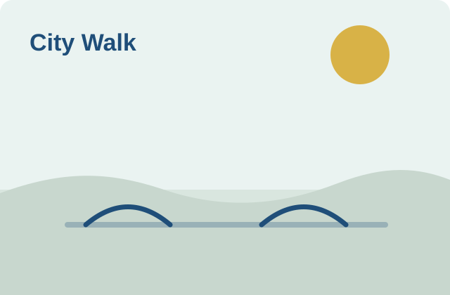
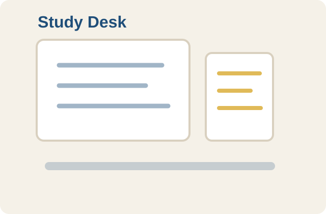
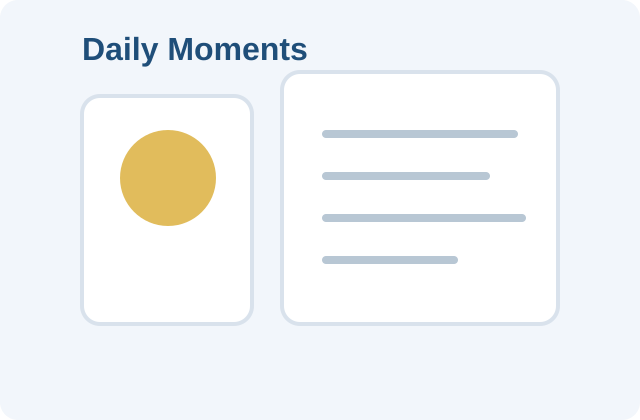

个人博客 · 学习笔记 · 生活相册
一个记录语言学习、AI 智能、人文历史、社会观察、政治经济和日常生活的个人博客。
最近更新
像传统个人博客一样，把每次学习、观察和生活记录按时间慢慢留下来。
关于重音、元音弱化和自然语流的发音笔记，提醒自己不要只靠拼写判断读音。
全部栏目
英语、表达、阅读、写作、发音、词汇和多语言学习方法。
AI 工具、提示词、智能应用、编程工作流、API 和踩坑记录。
历史、人文、文明、人物、思想、地理背景和文化脉络。
社会观察、公共议题、新闻背景、政策变化和媒体素养。
宏观经济、产业变化、政策逻辑、金融常识和普通人的经济观察。
生活片段、学习复盘、情绪整理、习惯变化和个人思考。
我的相册
把生活里的路、光、书桌和片刻也留下来。


